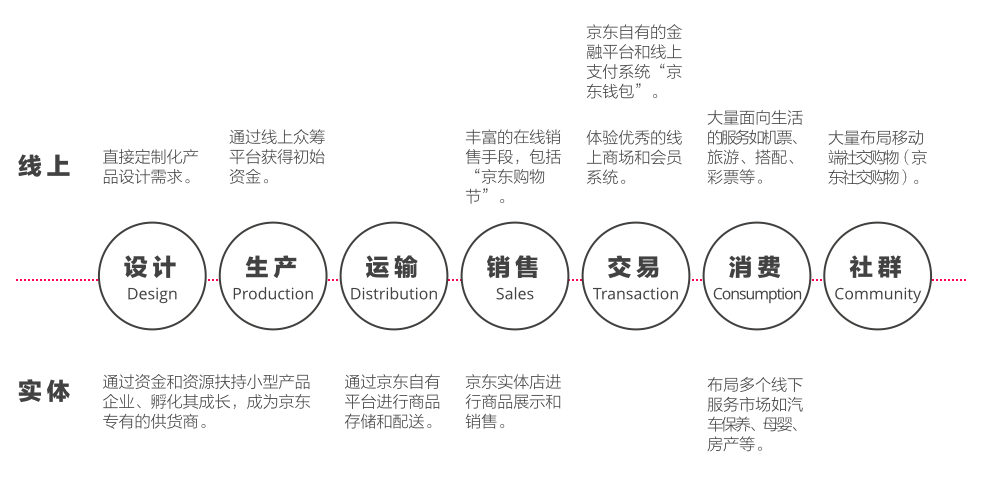

前文提到了我对物联网逻辑的认识，即为真实世界构建信息系统，并不断提升系统内对象的计算能力以更好地收集、存储、消费、再造、交换数据，同时增加与虚拟世界的关联。事实上，线上和实体共同组成了一个零售企业的数字战略，本文将重新梳理中国电商企业在线上和实体的布局，从而进一步思考未来物联网可能给传统零售企业带来的机会。
在物联网出现之前，至少出现了两次信息革命，第一次是以运营自动化为核心的信息计算能力大跨越，第二次则是以互联网以及移动互联网为核心的信息互联能力大跨越。
就像前文所提到的人类对于信息系统的改造无外乎计算能力和互联能力两个方向，前两次革命合力，完成了虚拟世界的基础改造，以互联网和个人终端强大计算能力为基础的虚拟世界初步建成。
前40年的数字化战略
这也代表了大部分包括零售企业在内的商业公司在信息技术方面近40年的数字化投资策略：
- 前期投入大量成本建立运营自动化的基础设施；
- 之后重点逐步转向建设电子渠道和整合电子渠道，即全渠道。
在社交网络特别是移动互联网侵占几乎用户所有碎片时间之前，大部分零售企业的数字化战略重点都在于如何利用IT信息系统更好地帮助“促成交易”。
首次对抗
当传统零售业按部就班地进行数字化改造时，它突然发现自己的竞争对手比自己走得要快得多：运营较为轻量的互联网企业在一开始就投入大量资源在电子渠道和全渠道的建立上，这使得互联网零售企业在短时间内拥有了更佳的用户体验，当他们已经完成了虚拟世界中中前台的布局，转过头来提升自己的运营能力时，传统零售企业依旧举步维艰地建设它的电子渠道和平台基础设施。
在首次对抗中，世界上的大多数地方传统零售业受到互联网电商不小的冲击。但是零售是一个具有完整产业链的古老行业，它所包含的内容不简单只是促成交易前的这一部分：
从产品的规划和设计、产品生产形成成品、商品分销在店铺中、合适的销售方式、形成交易、客户消费产品、最终客户形成自己的社群。实体店购物的体验依然是广大消费者更喜欢的方式，最新报告显示，依然有85%的顾客希望在实体店中消费。
实体零售依然没有放弃这样的天然优势，于是在这一阶段一部分的数字战略集中在了线下，即实体店中：服饰零售业许多实体店的销售员开始配备移动电子设备帮助客户选择和寻找商品，并推出线上购物、线下到店取货的服务（Gap的Reserve in Store）。这是实体电商首次在数字战略的实施中根据自己的特点对线上电商的反击。
这使得线上零售商开始意识到，传统零售商的IT能力总有一天会到达一定成熟度，建立同等品质的电子渠道和全渠道平台，就可以通过其更强的上游渠道控制能力以及线下实体服务的提供能力与之抗衡。
第二次对抗
中国电商企业开始不满足只停留在交易环节。电商企业发现，因为缺少实体的环境和长久以来的品牌，留住客户的除了交易环节的便利（浏览、查看、下单、支付、物流等）似乎没有太多优势，在这个背景下电商的把关注点放在了：
- 更灵活的销售策略；
- 通过消费过程中产生的内容创造虚拟社区。
这一阶段出现了大量新的线上销售策略，如大规模市场活动联合运作产生的“线上购物节”，中国的淘宝双十一在短时间内制造出一个超过美国Cyber Monday的现象级消费日、大量使用“秒杀”和“爆品”等销售方式，并通过虚拟红包在社交网络中传播购物打折券。
这些动员上亿消费者的能力和销售策略的高执行力和渗透度，背后是超强的技术支持，例如2013年双十一当日支付宝单日完成支付1.88亿笔，超过全球VISA卡全球刷卡数（参考），这些都是传统零售商不可逾越的。
另一方面消费过程中产生的内容被鼓励分享，“晒单”、“买家卖家秀”这样具备传播力的内容，大量独立存在的买家社区，通过社交网络存在的个人买手都在通过内容帮助线上零售企业维护交易后的消费者关系。
第三次发力
互联网零售在销售、交易、消费三者中打破了传统零售线性的模式，用内容作为润滑剂将三者有机结合，形成了一个贯穿销售、交易、消费三者合一的社群模式，交易被模糊。
接下来，互联网零售开始尝试打通线下的实体环境，这里包括两个策略：
- 整合只可能在线下完成的服务，如物流和商品展示、甚至生活服务；
- 把以前无法线上完成的事情放到线上来，如众筹模式的产品设计和生产。
几乎各大中国的电商企业都在2013年左右自建或整合了自己运营的物流体系，大量投入在线下的物流体系和仓储系统，增加供应链的管理能力，例如阿里巴巴集团在2013年5月联合多家传统商贸企业、物流公司建立了菜鸟物流，尝试打造一个价值500亿美元的智能物流骨干网。
和世界上许多线上零售商一样，中国的电商企业也开始在线下建立零售店，但主要以社区服务和物流点为主。
京东于2015年6月推出了汽车免费上门维修服务，正式进入汽车保养服务市场，此举将大大提升京东与其主流消费者直接的联系，也可间接提高平台汽车相关产品的销售。
而以前完全需要线下设计生产过程，互联网零售也尝试把部分过程搬到线上，所用方式就是众筹的方式支持那些轻小型的初创产品企业，例如京东众筹平台上线以来已经累计筹集近7000万美元的资金，给初创的产品公司。同时利用自有的资源（用户量和资金）扶持上游的生产企业。
京东刚刚推出了企业平板电脑定制化采购服务（参考），它将大宗的企业平板电脑采购定制化需求直接对接到了生产厂家，企业可以直接跳过销售环节直接通过京东定制需求。
另一方面，对互联网零售所擅长的内容传播领域，电商巨头们依然野心满满，他们深知通过互联网传播的内容是其锁定客户最有效的手段，2015年6月，阿里巴巴旗下的阿里影业融资124亿港币，开始从内容提供商转型内容平台商，未来阿里巴巴可以用来锁住客户的内容不可限量。
在第三次发力结束之后，拥有大量资本、用户、内容、以及IT能力的中国电商企业，基本完成了贯穿产品设计生产到终端消费的线上数字战略，一个典型的X品牌下中国电商用户可以：
- 通过X品牌下的金融产品获得的收益；
- 用这个收益投资一个X品牌下众筹平台的产品；
- 这个产品接受X品牌的企业和产品孵化服务（如场地租用、或设计服务）；
- 在X品牌旗下的实体店体验这个概念性产品；
- 通过X品牌的金融产品分期支付购买这个产品；
- 通过X品牌的自有物流得到这个产品；
- 把使用体验写成内容发布在X品牌参股的社交网络上；
- 消费者获得更多金融产品的购买权利。
让我们来重新梳理一下中国电商企业线上和实体的到目前为止的数字战略，如果以京东为例：

未来
中国零售业起步较晚，在自己的品牌、客户关系、运营能力、服务能力、和IT能力成熟之前就不得已进入了互联网电商企业的竞争，目前中国互联网电商企业聚集着大量资本、更优秀的IT基础设施、更轻量的运营模型，在短期内，中国互联网电商将继续完成四个方向的布局：
- 向左继续深入到供应链的源头，建立、扶持、和投资更多专属于电商渠道的品牌和产品；
- 向右继续深入消费者社群，提供更多具备传播性的内容，将出现更多电商企业收购内容平台的案例；
- 向上继续完成和丰富线上端到端的体验，建立沉浸的数字体验；
- 向下继续扩充现实环境中的服务体验，针对生态系统里的生产者、销售者、运输者、消费者提供多元化的线下服务。
2013年中国最大的传统零售企业苏宁电器全年完成了170亿美元的销售，而2014年10月，阿里巴巴在天猫上完成这个数字的一半只需要一天（来源）。在可见的未来，传统零售业依然面对的是一个迅猛增长的电商产业。
写在最后
普遍认为IoT技术即将影响的行业中，零售首当其冲，然而IoT技术只是整个线上和实体布局中数字化战略的一个实现方式，它大部分的应用场景都和实体业务布局中的数字化相关，但是我们依旧要从零售行业变局的整体框架中寻找思路，中国电商的线上与实体的战略布局可能帮助我们为传统零售企业找到一条可能的路线。